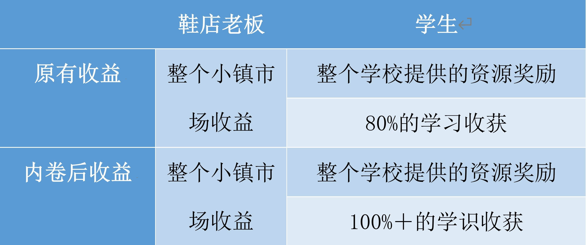
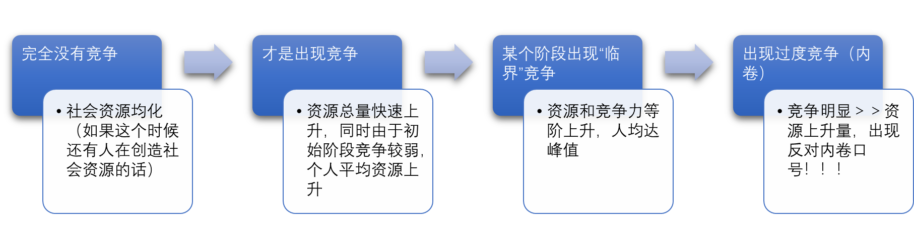

BUAAer-LLG
- Emailaa13678328213@outlook.com
- Phone+86 13678328213
- Birthday29 Oct, 2003
- LocationBeijing, China
内卷 or “内卷”
时间过得很快，一转眼我以成为一名大学生。近来的大学生活让我对于最近的流行词——卷和躺平，有了新的认识，从调侃到正视它。
我们先来讨论内卷：先来看看内卷的定义：“... 很多高等学校学生用其来指代非理性的内部竞争或“被自愿”竞争... 现指同行间竞相付出更多努力以争夺有限资源，从而导致个体“收益努力比”下降的现象...”。在最近的讨论中，我发现绝大部分人是反对内卷的，理由主要有二：
一. 我们原本可以正常获得的资源奖励，内卷后我们便要付出更多的（甚至是数倍的努力）才能获得等价的结果。
二. 这会导致非理性的内部竞争或被动竞争。
咳咳，我们正式开始 ✨
对于一而言，我想可以用下面这样一个故事来支持观点一：
曾有小镇上有很多鞋店，这些鞋店每天上午10点开门，中午12点午休2小时，下午2点到晚上6点继续营业；每周一至周五营业5天，周末休息。夏天最热的那几天，鞋店老板们会纷纷把店关掉，去南方的海边度假；冬天最冷的那几天，鞋店老板们也会纷纷把店关掉，去北方的山里滑雪。 多年以来，小镇上的常住人口没有什么变化，鞋的品质一直优秀，供货也稳定。所以，小镇上的鞋的供需关系一直处于一个近乎完美的平衡状态。
后来有一天，一户人家搬来小镇上，并且也开了一家鞋店,。小镇虽然小，但也算具有一定规模，鞋的供需平衡还不至于因为新增一家鞋店而被打破。但是，这户人家以勤奋、能吃苦著称。他们每天早晨7点就开门了，中午也不午休，晚上直到11点才关门；周末他们也正常营业，夏天和冬天他们也从不去度假。
渐渐地，他们的“勤奋”得到了回报，他们鞋店的生意明显好于小镇上的其他鞋店。但小镇老板们也不服输，他们纷纷效仿大城市人民的作息时间，每周工作7天，每天工作16小时。“勤奋”也得到了“回报”：他们的营业收入恢复到了以前的状态。
那么，此时的小镇生活发生了什么样的变化呢？
由于小镇人口并没有增加，鞋的需求量保持恒定，跟以前一样，所以每家鞋店最终的营业收入没什么变化，并不会增长。但营业时间从原来的每周5天，每天6小时变成了每周7天，每天16小时。也就是说，他们的工作时间变长了，但收入却没有增加。这就是传说中的内卷。
我们注意到，在内卷下，内卷群体中（注意，是指发生内卷的那一类属的人，如这里的鞋店老板）用多的付出换来了同样的经济利润，但他们的生活娱乐变差了，所以总的来说内卷是不利的。
这便是理由一的主要立论。但我们同时要注意到真的是这样吗，内卷真的对我们无利吗？ 在我看来，上诉事件的逻辑和作为学生的我们是有本质上区别的。
不可否认的是，对于现阶段的我们获得更多的知识能力的意义大于获得奖励名额的意义。
如表就很明显了（如果非要说鞋店老板也会有开店能力提升这一点收获的话，我们可以这样看：对于已经能够正常运营生活的老板来说，这时候收益和稳定＞获得更多的额外能力，这里我们称收益阶段，因为它已经有足够的能力了。而作为学生的我们，gain more knowledge ＞ 竞争更多的奖励，因为我们还处于能力培养阶段，这里我们称发展阶段）。
另外，我们从与内卷群体有直接关系利益的群体（如买鞋的人，培养学生的学校）来看，就很明显都是有益的！
那既然这样那我们是不是要支持内卷呢？这只是我们从其中一方面分析的结果，不能以偏概全。我们也要注意到二——这会导致非理性的内部竞争或被动竞争。
对于二而言，我们在此不妨平心而论：
如果我们都是主动积极的竞争，同时保持理性，那我们是不是就可以保留一中所提到的所有益处（更多的学识，对学校社会更多的益处etc. ）同时由于竞争是理性的，我们每人的劳动性价比将会介于内卷与不内卷之间。一旦建立平衡，便会是很好的良性循环。于是我们可以做一个大胆的结论，正是由于其竞争的非理性和被动性使得内卷变成了“内卷”，那个被学生们所恶的“内卷”。
在这里我不免假设一个完全没有竞争的“理想”世界
也许“竞争”也在随着社会发展和时代变迁而在进化、加剧，也许人们一开始只看到了它的好处（坏处还没暴露出来），人们又有过度发展的潜质，但我相信，当人们发现这一问题，一定会正视并积极解决它，就像当初我们对待环境和发展的态度一样，不会再因为发展破坏环境了...
但是值得注意的是，这里的理性和被动性是很难准确确界的，也许连你自己都不清楚你到底是主动还是被动的，别人也更不会真正清楚。
所以，这不能成为我们阻止、指责别人努力 或是 我们自己逃避努力（哎呀，我又不卷）的理由！！！
至于现在你还要不要内卷，全在你一念之间...